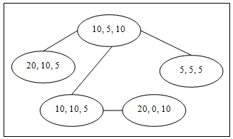

34th ICPC World Finals · Problem D
Wars have played a significant role in world history. Unlike modern wars, armies in the middle ages were principally concerned with capturing and holding castles, the private fortified residences of lords and nobles. The size of the attacking army was an important factor in an army’s ability to capture and hold one of these architectural masterpieces.

A certain minimum number of soldiers were required to capture a castle. Some soldiers were expected to die during the attack. After capturing the castle, some soldiers were required to remain in the castle to defend it against attacks from another enemy. Of course, those numbers were different for different castles. Commanders of the armies were obliged to consider the number of soldiers required for victory. For example, there are five castles in the region map shown in Figure 2. The castle at the lower right requires at least 20 soldiers to wage a winning attack. None are expected to perish during the attack, and 10 soldiers must be left in the castle when the army moves on.
In this problem you must determine the minimum size of an army needed to capture and hold all the castles in a particular region. For reasons of security, there is exactly one (bi-directional) route between any pair of castles in the region. Moving into the neighborhood of an uncaptured castle begins an attack on that castle. Any castle can serve as the first castle to be attacked, without regard for how the army got there. Once any castle has been captured, the requisite number of soldiers is left in the castle to defend it, and the remainder of the army moves on to do battle at another castle, if any remain uncaptured. The army may safely pass through the neighborhood of a castle that it has already captured. But because of the potential for attacks, the army may traverse the route between a pair of castles no more than twice (that is, at most once in each direction).
The input contains multiple test cases corresponding to different regions. The description of the castles in each region occupies several lines. The first line contains an integer n ≤ 100 that is the number of castles in the region. Each of the next n lines contains three integers a, m, and g (1 ≤ a ≤ 1000, 0 ≤ m ≤ a, 1 ≤ g ≤ 1000), that give the minimum number of soldiers required to successfully attack and capture a particular castle, the number of soldiers that are expected to die during the attack, and the number of soldiers that must be left at the castle to defend it. The castles are numbered 1 to n, and the input lines describing them are given in increasing order of castle numbers. Each of the remaining n – 1 lines in a test case has two integers that specify the castle numbers of a pair of castles that are connected by a direct route.
A line containing 0 follows the description of the last region.
For each test case, display the case number and the minimum number of soldiers in the army needed to conquer all the castles in the region. Follow the format shown in the sample output.
3 5 5 5 10 5 5 5 1 1 1 3 2 3 5 10 5 10 20 10 5 10 10 5 5 5 5 20 0 10 1 2 1 3 1 4 3 5 0
Case 1: 22 Case 2: 65